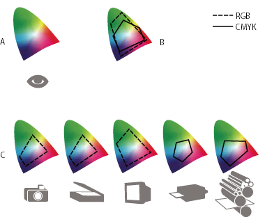

Why colors sometimes don’t match
No device in a publishing system is capable of reproducing the full range of colors viewable to the human eye. Each device operates within a specific color space that can produce a certain range, or gamut, of colors.
A color model determines the relationship between values, and the color space defines the absolute meaning of those values as colors. Some color models (such as CIE L*a*b) have a fixed color space because they relate directly to the way humans perceive color. These models are described as being device-independent. Other color models (RGB, HSL, HSB, CMYK, and so forth) can have many different color spaces. Because these models vary with each associated color space or device, they are described as being device-dependent.
Because of these varying color spaces, colors can shift in appearance as you transfer documents between different devices. Color variations can result from differences in image sources; the way software applications define color; print media (newsprint paper reproduces a smaller gamut than magazine-quality paper); and other natural variations, such as manufacturing differences in monitors or monitor age.

- A.
- Lab color space
- B.
- Documents (working space)
- C.
- Devices